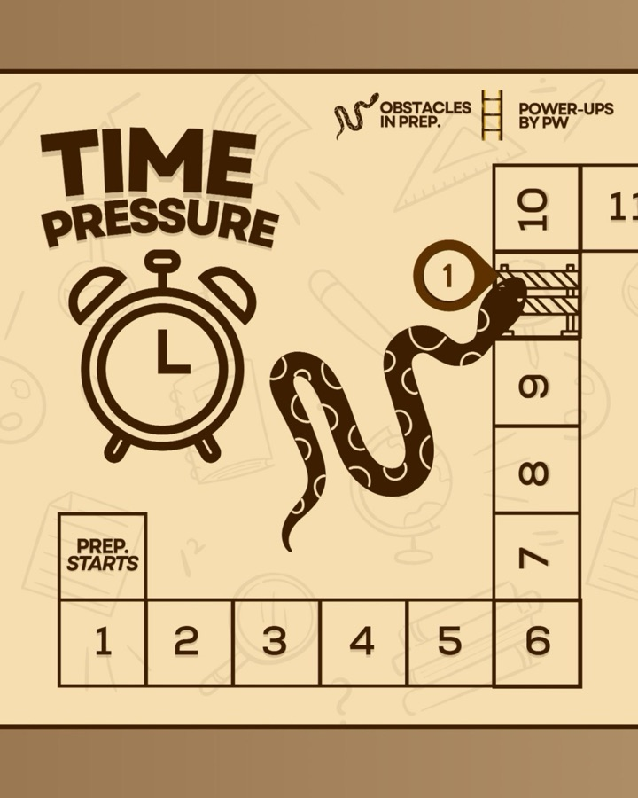

Living utility
The essentials: the home, groceries, power, fuel, the phone, medical care, help at home and school fees.
It is much easier to generate wealth than to maintain it. Four parts decide which it will be.
EarnYours. The other three are where we come in.
SpendLiving utility, experiences and royal spends.
InvestMoney put to work with a high return in view.
SaveEmergency, safe and liquid funds, for immediate needs.
Earning is yours. What it becomes is decided by three things: how it is spent, what is saved and what is invested.
Have a word with usThe essentials: the home, groceries, power, fuel, the phone, medical care, help at home and school fees.
What is chosen for the joy of it: dining out, streaming, hobbies and trips.
Major assets and luxuries: a car, jewellery, travel abroad, upgrades to the home.
Rare things with a story, chosen for people who have everything else. Nothing here is for sale: ask us about any of it.
Craft
Where it comes from and why it is rare: to come from Metamorph.
Ask us about itInstrument
Where it comes from and why it is rare: to come from Metamorph.
Ask us about itRecords
Where it comes from and why it is rare: to come from Metamorph.
Ask us about itStay
Where it comes from and why it is rare: to come from Metamorph.
Ask us about itGiftA gift
Where it comes from and why it is rare: to come from Metamorph.
Ask us about it
CommissionA gift
Upcoming artists across nine domains, each open to commissions.
See the artistsMoney that takes no more than the normal level of risk is saved. Anything beyond it is invested: more risk, for more return. Saving can keep you safe, but not wealthy.
No riskHigh risk
Saving: the safest places, and how quickly the money comes back.
| Option | Comes back | Good for |
|---|---|---|
| Savings account | Any day | Everyday money and the first emergency |
| Liquid funds | Usually the next working day | The emergency fund, earning a little more |
| Fixed deposits | At the end of the term, or early for a small penalty | Money needed on a known date |
| PPF | After fifteen years, part of it from the seventh | Long, safe saving with a tax benefit |
Investing: what fits depends on what you earn and how much risk you can take.
Set what comes in and where it goes. The picture shows a rough estimate of your family’s life today, in five years or in ten.
This is a rough reflection of a possible state of wealth, based on averages taken for each variable. Real incomes, prices and returns will differ, and nothing here is financial advice.
Money is not the parameter of someone's success, but it does give the buffer and the opportunity to reach closer to that success, for you and your loved ones.